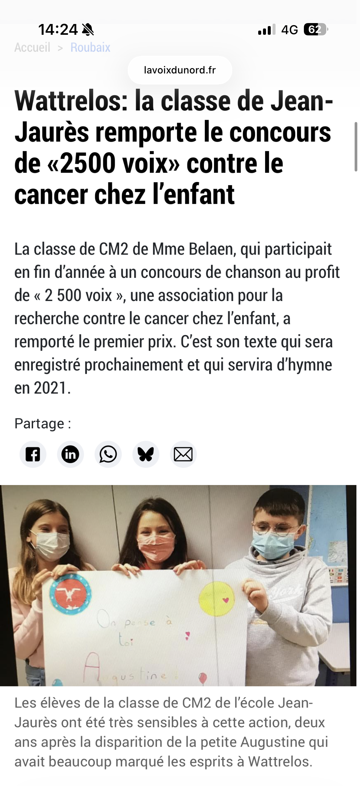

Mes Passions
| Accueil | Productions scolaires | Mes Passions | Mes Vidéos | Mon site de rêve |
|---|
J'ai toujours aimé voyagé et ce que je préfère c'est à la fin, pour me rendre nostalgique je me fais un petit vlog voici un de mes vlogs lors de mon voyage à Londres
En 2021 j'ai participé à un stage cinéma où j'ai pu créer deux bandes annonce dont la deuxième que j'ai fait de A à Z, j'ai aussi fait le story board ainsi que l'invention de l'histoire, tout sauf le montage et la première où j'était "actrice"

La musique a toujours fais partie de ma vie j'ai pratiqué le trombone le piano aisi que le chant j'ai aussi participé à un concours avec ma classe, appelé 2500 voix que nous avons gagné nous avons eu l'opportunité de passer à la radio et au journal (je suis même en photo !). Et voici un album latino que je vous conseille avec un texte et un son très bien travaillé Dtmf de Bad bunny